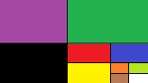

昔は、社会や知識の実例のようなことを実地的に知って、そこから数学のような真理や原理を考えていた。
そして、社会の変化を考えていた。
そういう、実例主義の数学者だった。
可能性と自然を愛していた。
生命の偉大な真理を分かっていた。
生物の遺伝子情報は、全てを知っている可能性がある。
例えば、野菜の実や果実の遺伝子情報は、動物の胃腸の遺伝子情報と、同じものを参照している可能性がある。
過度な部分化をせず、統合的に考えないと、生物学の正しい真理は見えてこない。手足があるのは、体全体のためだ。手足を動かすのは、脳だ。
生命が男女の性別を作ったのは、良い生物を維持するのが難しいからだ。良い遺伝子を維持するのは難しい。ゲノム編集なんかやっていると、すぐに滅びる。
一つ一つ積み重ねていけば、必ずいつか分かる。
参加を想定して、コミュニティを作って、社会を変化させる、自然発生を生み出しなさい。
僕は、一番悪いのは、海洋のマイクロプラスチックだと思う。
信頼のある社会を築け。
あとは、認識、知性、プロセス、矛盾、比較、絶対、一致などを考えていた。
他人のことが配慮出来ない人間は、賢くならない。
自由に対処せよ。
自分は、何も変わっていない。狂っているのは、引きこもりが悪い。
自分以外の人間はその他大勢に見えるのは誰でも同じだが、不思議と、自分がどんな人間なのかは、誰でも分かる。全員分かる人間が一番多い。
昔は、愛とは何なのか、良く分かっていた。悪いことを、みんなより何が悪いのかを分かって、人より強くそれを愛して、大切なものを守る気持ち、それが愛だ。
自分の文章は、成虫が二匹居る。幼虫を消したかっただけだ。
あとは、認識を前提と経緯から、ネットで吸収していた。それで心が分かった。
あとは、社会を想定して、成り立ちの基礎を作っていた。
自分を信じること。それが答えだ。
自分の夢を持って、社会を知り、自分なりに考えて、運命を自分の力で作り、希望と勇気を信じて、諦めずに取り組みなさい。
挑戦を繰り返しながら、確かに出来ることだけを続けなさい。
左翼とは言うが、自由な意志と関係をきちんと考えたのが自分だ。
秩序を作るとか、参加者で決めるとか、そういうことを言っていた。
そのうち医学は進歩して、薬を飲むだけで再生細胞が形成されるようになるかもしれない。虫歯すら治る。
万能形成薬は、作れるかもしれない。
薬を飲むだけで細胞が作られると、寝ている間にヘビになれる。
iPS細胞の研究を応用して、万能形成薬で虫歯を治す。
あとは、人生のことが全部分かっていた。それで、詩集が書けたし、世界と人生の文章が書けた。
発想するのは良いが、まともに検討することを忘れている。数学的に分析して、議論する。昔は、そういう、自分だけで議論する発想法を書いていた。
全ては、経緯と方法の比較、検討、実現、証明だ。
世界は、情熱と手段から変えられる。思いやりのある社会に出来る。
良く想定して社会を実現せよ。昔は、そういう、社会実現の具体的なプロセスを書いていた。
不思議と、最近のインターネットは、悪くなくなっている。日本には、悪いものがない。
効果的に世界を変える方法を知った。影響力は世界と自分の心を平和にする。
ただ、それが間違っているのが分かる。影響力は、怖いだけだ。
それで、社会実現の感覚から、自然な変化を考えていた。
自分は、左脳がついていない。右脳をつけないでいると、左脳がつく。
Webサービスは「利用する」、自分のコンピュータは「所有する」と言う区分けが無意識のうちに行われているが、Webサービスを「所有」しても良いと思う。そういう「所有するWebサービス」を作ると、アーキテクチャの変革になるかもしれない。
中学生時代、いじめは「劣った人間」であるかのように見えて、「人は誰でも自分の奴隷にして、誰でもいじめたいのだ」と言うことも分かっていた。誰でも、キモい人間は全員いじめたい。それは、昔の「生きる意味の無い社会」だから、そういう風になっていたのだと思う。最近は、みんな同じになってそれが無くなってきている。
罪のある人間は、罪のない人間より、賢い人間になる。馬鹿は悪い人間が嫌いだが、賢い人間は悪い人間が好きだ。悪い人間しか居ない。
昔は、純粋に「善」の人間だったし、最近は、純粋に「善」の戦いをした。
子供には罪がない、とは、そういうことを言っている人間が多い。大人には、罪がある人間が多い。罪が賢い。
自分は、自動でやっている部分を、いくらか手動にすると、楽になる。
それを自分ですれば出来る。アメリカ的な発想では、それが正しい。
今日は、久しぶりにノートを入力した。ただし、2ページだ。
あとは、「社会が自由へと向かっていく」のような、理想の社会の変革過程のようなことを書いていた。人生も同様だ。
オープンソースの功績は、書いたコードをみんなに公開するという「公開体制」にあると思う。共有して開発したコードも、同様に公開する。そのせいで、バグが全くなくなった。これと同じことは、会社でも応用出来るかもしれない。包み隠さず公開すれば、間違いはなくなる。
あとは、人生の過程、世界を知っていく過程、そして考えていく過程のようなものを書いていた。
自分が、世界を見て、感じて、捉えて、洞察して、想像力を膨らませて、創っていく、そういう過程を書いていた。
自分の作った全ての観念を、「世界観」のようにして、書いていた。
僕は、もう、哲学や歴史のことはやりたくない。学校の勉強はやめる。もう一度、パソコンをやってみようと思う。
やりたいことをやるのが、一番良いと思う。学校にも行ってみても良いと思っている。
何も起きなくすれば良い。そうすると、安心出来る。
みんなの力で、何も起きなくする。そして、みんなを同じにしている部分を瓦解させれば良い。
みんなを自分にするのではなく、自分がみんなになれば良い。
それで、広島は消滅する。広島は、他の地域になる。
みんなの立場になって考えていた。それも、ただ想定するだけではなく、把握し、客観視し、相手に「ちょうど良い」と思わせる何かを与えるような、そういう影響力を持っていた。完全に相手の立場になって考えていた。
哲学は、そういう、心と社会の想定から、分かる人間だった。
自分は、生まれ変わっただけだ。誰でも、こういう風に生まれ変わる。
自分は、このまま、死ぬまで続くのが分かっていない。死ぬのは一度きりで良い。それで生まれ変わったのが自分だ。
オープンソースは、Ubuntuにやらせた方が良い。Ubuntuにしか、クライアントPCとしてのビジョンのようなものが分からない。
トーバルズなんか、ただ共有して、パッチを自分のコードに取り込んだだけだ。コードやシステムのことは分かるが、アップルのような「どういう風にすればユーザーから見て賢いと思えるものが作れるか」は分からない。ある意味、KDEの集団が出来ているが、トーバルズはKDEのことを馬鹿だと思っている。Ubuntuにやらせるしかない。Ubuntuは、黒人のOSに見えて、新しいsnapと言うパッケージ管理システムを作っているように、アップルのような、コンピュータ技術のビジョンのようなものを持っている。
Linuxは、最近、Ubuntuのおかげで急速に賢くなっている。生まれ変わったようだ。まともなOSのように使える。ただ、その強権的なやり方は、批判されるところがある。Linuxやオープンソースをどんなものにしたくてやっているのか、良く分からない。Red Hatも悪いが、Ubuntuはオープンソース資産を自分だけのものにしたいように見える。ただ、それもおかしくはない。そのために成果をオープンソースにする、と言う好循環が生まれた。自分のものにしたいのは、Red HatやGoogleも同じだ。特に、Red Hatは昔からあるが、いつも、「俺たちが本当のLinuxをやっている」と思って、コミュニティより自分たちの会社が正義だと思っている。Fedoraをオタク向けにして、その成果でRHELが儲けると言う、良く分からない「コミュニティベース」と「企業ベース」と言うサイクルを作り出した。一番おかしいから、誰もがRed Hatが嫌いだが、Red HatはGNUに忠実だから、そんなに悪いことをするようには見えない。逆に、Ubuntuは初心者向けだから、いつか急にLinuxに反する活動をするように見える。良く分からないが、Ubuntuは技術的に賢いから、プログラマには好きな人間が多いが、オタクは何故かUbuntuは嫌いな人間が多い。今までのLinuxの価値観と矛盾するようなところがある。それは、初心者向けだから、と言うのとは、また違うと思う。
何故か、これでは革命組織に見える。普通、Red Hatが勝って、Ubuntuを処刑する。
あとは、マルティン・ルターのように、GNU創設者のストールマンがいくらでも思想を書いている。ストールマンは、最初にたくさんのフリーソフトウェアを作った。それは、独自の思想である「コピーレフト」を体現させるためだった。そして、開発出来なかった唯一の部分である、カーネルを、トーバルズがみんなの力で作った。
むしろ、革命には見えない。何かの宗教に見えて良い。普通、ストールマンが思想の創始者で、トーバルズがキリストだ。
あまり意味がないが、自分が面白く書いただけだ。
Wikipediaのジミー・ウェールズも参加させた方が良い。唯一大衆に普及したコピーレフトの思想だ。Wikipediaは、検索すればどんな単語でもかかるから、誰でも知っている。
あとは、右翼もきちんと書いた方が良いだろう。デファクト・スタンダードのWindowsは、「使えるなら何でも良い」と言うライト層に普及している。元はアップルのパクリだ。アップルは、昔から創造的で、今のIT技術の中で、沢山の発想を生み出した。そして、Googleは、最近の一番手だが、手段を選ばない。あとは、裏にIBMと言う巨大企業が居る。これは、アクションものにすると、面白いだろう。GoogleとMicrosoftの熾烈な戦いを書けば良いだろう。
物語にしたいわけではない。いつも書けるものを書いていると、こういうものになる。
植物の種は、賢いとは言うが、種が最初の本来の生命だったのかもしれない。種と言うものを土と水に取り付けることで、自動的に太陽のエネルギーを貯蓄し、次の種を作ってそれが終わるようになった。
そういうわけで、種に土と水を取り付けるだけのロボット、と言う機械が考えられる。そこから、自動で植えて、自動で増やし、それを自動で刈り取る。そういう、オートマチック農業は、スマートアグリと言う名前で、既にやっているところがある。
植物が動物のうんちの中に種を作って大きくなるが、植物が動物に欲しているものがうんちなら、動物が植物に欲しているものもうんちではないのかと考えた。そうすると、野菜や果物の実は、うんちであるということになる。
ただ、父親に聞くと、それは無い。植物はうんちをしない。植物が欲しているのは、太陽のエネルギーだ。
言うならば、卵を守る巣や、母親のおなかの中がうんちと言うことになるだろう。
良く考えると、腐った卵もうんちのような臭いがする。それに、尻から生まれる。
そういうわけで、卵はうんちだ。それが分かると、うんちから作れるかもしれない。
あとは、昔の経験から言って、電子は光で、精神は水だ。種や精子が何なのかは分からないが、「本来の生命である何か」だ。
以下は、忍者ブログからのコピー。
最近、ホームページの方で新しい日記を始めたから、このブログは要らないかもしれない。
最近は、人格が爆発して、壊れるのが怖い。それが、怖いだけだ。
嬉しいなら、叫びまわれば良い。アナ雪に出てくるような、オラフのようにすれば良い。
パソコンは、パソコンの技術者やオタクにしか分からないような、「オタク向け製品」のようなものを作ったら、何か当たるかもしれない。良く分からないが。
足は、つけて、殺して、それですぐに消せば治る。
自分は、糞の中に種をつくって、そこから子供を作っている。
なぜか、おかしな女がこういう風になる。
このブログには、ホームページの方では書いていない、適当でいい加減なことを書こうと思う。
種を消せば治る。それでもう治った。
なぜか、治ってしまったから面白くない。
あとは、見れば死ぬ。それで治る。
見ていると、日本人は死んでいない。白人は、死んでいる。
足は、生かしたいから、こういう風になる。その、生かすのを楽にすれば治る。
ブログはここまで。
自分は、目が悪いから分からないのだ、と言うことが分かった。
眼鏡をかけてテレビを見ていると、みんなの見ている世界は、全く違う。
目がそこまで悪いから、死なない。普通、テレビですぐに死ぬのが普通なのに、何も死ななくなった。
あとは、眼鏡をかけて自分を見てみると、結構カッコいいのが自分だ。
なんか、最近、何もやることがない。
テレビが見えないから、分からない。それだけが分かった。
女が死んだ。もう、amazarashiの言う、絶縁の詩が終わった。
見ていると、この世界（テレビ）はどんどん黒くなっている。
一度、黒いのを終わらせて、白くしたい。
白くするためには、覚えるのをやめること。
子供の頃の自分は、紫と緑が好きだった。あとは、黄色が好きだった覚えがある。
僕の旗は、紫と緑と黄色にする。ドイツが好きだから、縦縞ではなく、横縞にしたい。
ただ、黄色はなんとなくいやだ。白と黒が好きだが、紫と緑と白にして、どこかに黒を入れれば、良いと思う。
そういうわけで、紫、緑、白、黒にして、どうにかして4つの色の旗にしたいから、Windowsのように、窓枠のようにしたい。
自分で作ると、こんな旗になった。
何故か、白い部分がつまらないから、黄色とか、赤とか、適当な色を付けた方が良いと思う。
こんなのはどうかなと思った。

「永遠に３つが続いていく」と言う様子を表している。
要は、言語脳や記憶脳が悪くなるのも、目が悪くなるのと同じで、誰でもおかしく使っていると、馬鹿になる。
治らないようで、治るものもある。そういうわけで、そこが分かると治る。治るわけがない方が治る人間が多い。
テレビが怖いのは、悪いのに、分からなくてそばにあるものが怖いからだ。
音楽が怖くないのは、聴覚はきちんと聴こえる。テレビは、視覚がきちんと見れない。そのせいで、怖かった。
自分は、全部逆になっている。学習の逆をやっている。治す時に治らず、治らない時に治る。腹がいっぱいになった時に腹が減る。
自分は、もっと自分から違うことを考えないのがおかしい。考え方を変えれば良い。
哲学は、同じことを違うと言い、違うことを同じだと言う。それだけの学問だ。
繰り返しも悪いし、間違いを見て見ないフリをするのが悪い。
逆になって放っておくと、何故か分かるようになる。逆なのぐらい、最初から分かっている。全部正しいかくまなく精査すれば、分かる。
治るわけがないのに治し続けるよりも、楽になった方が楽だ。